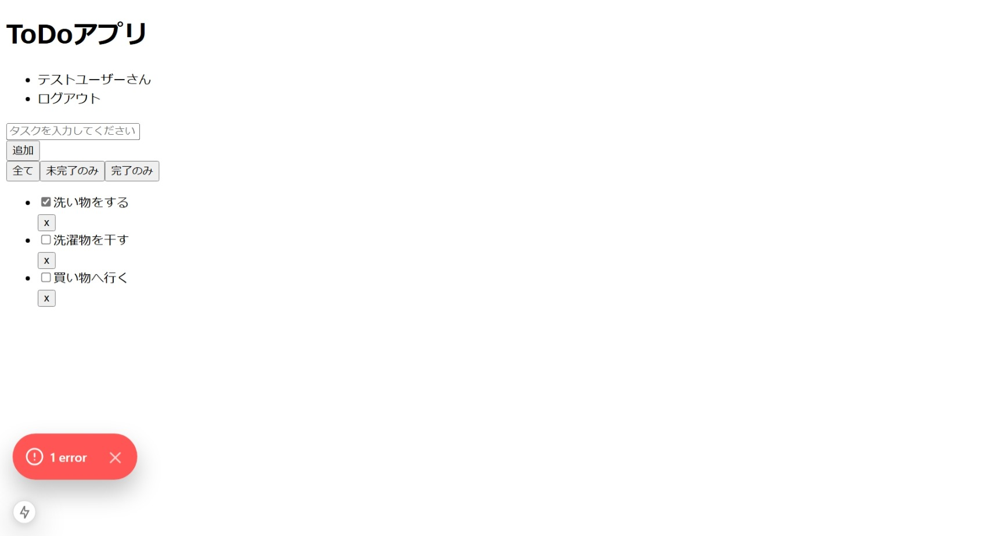

ページ外観の作成
ToDoページの外観を作成します。
ToDoページの表示
まず、フロントエンドのアプリでデザインモックと同様のページを表示できることを確認します。
前述のとおり、ToDoアプリのデザインモックはspa-restapi-handson/design-mockに配置しており、その中のtodo.htmlとtodo.cssがToDoページのデザインモックになります。デザインモックを確認すると、以下のような画面デザインになっています。

現時点ではアプリケーションのルート（src/app/page.tsx）に対応するHomeコンポーネントのみ作成されており、
<h1>Hello, world</h1>を返しています。todo.htmlからbody部を抽出し、JSXでデザインモックのHTMLと同等のReact要素をここに定義します。
その前に、変更結果の確認をしやすいようにアプリを起動しておきます。起動中はファイルの状態が監視され、ファイルが更新されると即座にコンパイルしてページに反映してくれるため、エラーがあった場合にもすぐに確認することができます。
アプリを起動するには、起動テストの時と同様、次のコマンドを実行します。
$ npm run dev
アプリが起動したら、HomeにJSXを記述していきます。HTMLを確認しながら順にJSXを記述していくこともできますが、ここでは、design-mock/todo.htmlのbody部をそのまま持ってきて同じように表示できることをまず確認してみます。また、HTMLをそのまま持ってきた際に、HTMLとJSXの違いによりいくつかのエラーが発生しますので、それについても確認していきます。
それでは、ToDoページのデザインモックであるtodo.htmlのbody部をコピーして、HomeのJSXとしてそのまま持ってきます。このとき、returnする内容を括弧()で囲みます。
src/app/page.tsx
export default function Home() {
return (
<header class='PageHeader_header'>
...
</div>
);
}
すると、次のようなエラーが発生します。
JSX 式には 1 つの親要素が必要です。ts(2657)
エラーメッセージを確認すると、JSX式には1つの親要素が必要、とあります。これは、JSXではトップレベルの要素として複数の要素を返すことはできず、必ず1つの要素として返さなければいけないためです。デザインモックのHTMLをそのまま持ってくると、headerタグとdivタグがトップレベルで並んだ状態になるため、このルールに違反してしまいます。ダミーの親要素として<div>等で囲って返すといったこともできますが、意味を持たない余分な要素をページに出力することになってしまいます。そのため、ここではフラグメントというReactが提供するコンポーネントを使用します。ハンズオンでは分かりやすさのために、<React.Fragment>と記述しますが、一般的には<>と記述します。
次のようにReact要素のトップレベルで使用することで、出力結果には影響させずに、複数の要素を1つの要素として返すことができます。
export default function Home() {
return (
<React.Fragment>
<header class='PageHeader_header'>
...
</div>
</React.Fragment>
);
}
このエラーを解消すると、次のようなエラーが発生します。
型 '{ children: string; class: string; }' を型 'DetailedHTMLProps<ButtonHTMLAttributes<HTMLButtonElement>, HTMLButtonElement>' に割り当てることはできません。
プロパティ 'class' は型 'DetailedHTMLProps<ButtonHTMLAttributes<HTMLButtonElement>, HTMLButtonElement>' に存在していません。'className' ですか?ts(2322)
エラーメッセージを確認すると、classプロパティはその型に存在しない、とあります。これは、JSXではclass属性が無いためです。このように、JSXはHTMLと完全に同じというわけではないため、属性がそのまま使えない場合があります。JSXでは、class属性と同等の属性がclassName属性として提供されているため、次のようにclassName属性を使うように修正します。Visual Studio Codeを使用している場合、addCursorsAtSearchResultsショートカット（Ctrl+Shift+L）を使うと、修正箇所をすべて選択して一度に編集することができます。
export default function Home() {
return (
<React.Fragment>
<header className='PageHeader_header'>
...
</div>
</React.Fragment>
);
}
このエラーを解消すると、checked='checked'の部分に次のようなエラーが発生します。
型 'string' を型 'boolean | undefined' に割り当てることはできません。ts(2322)
これは、JSXではchecked属性にはboolean値を設定する必要があるためです。
JSXでは、中括弧で囲うことで式を埋め込むことができますので、'checked'と同等であるtrueを設定するよう、次のように修正します。（参考：波括弧は JavaScript 世界への窓口 - React）
<input type='checkbox' className='TodoItem_checkbox' checked={true} />
ちなみに、スクリプトを実行したタイミングでエラーになるのではなく、このようにコンパイルされるタイミングでエラーを検知してくれるのは、型を利用できるTypeScriptのメリットでもあります。
これらのエラーを解消した後、Homeは次のようになります。
src/app/page.tsx
'use client';
import React from 'react';
export default function Home() {
return (
<React.Fragment>
<header className="PageHeader_header">
<h1 className="PageHeader_title">ToDoアプリ</h1>
<nav>
<ul className="PageHeader_nav">
<li>テストユーザーさん</li>
<li>ログアウト</li>
</ul>
</nav>
</header>
<div className='TodoBoard_content'>
<div className='TodoForm_content'>
<form className='TodoForm_form'>
<div className='TodoForm_input'>
<input type='text' placeholder='タスクを入力してください' />
</div>
<div className='TodoForm_button'>
<button type='button'>追加</button>
</div>
</form>
</div>
<div className='TodoFilter_content'>
<button className='TodoFilter_buttonSelected'>全て</button>
<button className='TodoFilter_buttonUnselected'>未完了のみ</button>
<button className='TodoFilter_buttonUnselected'>完了のみ</button>
</div>
<ul className='TodoList_list'>
<li className='TodoItem_item'>
<div className='TodoItem_todo'>
<label>
<input type='checkbox' className='TodoItem_checkbox' checked={true} />
<span>洗い物をする</span>
</label>
</div>
<div className='TodoItem_delete'>
<button className='TodoItem_button'>x</button>
</div>
</li>
<li className='TodoItem_item'>
<div className='TodoItem_todo'>
<label>
<input type='checkbox' className='TodoItem_checkbox' />
<span>洗濯物を干す</span>
</label>
</div>
<div className='TodoItem_delete'>
<button className='TodoItem_button'>x</button>
</div>
</li>
<li className='TodoItem_item'>
<div className='TodoItem_todo'>
<label>
<input type='checkbox' className='TodoItem_checkbox' />
<span>買い物へ行く</span>
</label>
</div>
<div className='TodoItem_delete'>
<button className='TodoItem_button'>x</button>
</div>
</li>
</ul>
</div>
</React.Fragment>
);
}
しかし、画面に次のようなエラーが発生しています。
Console Error
You provided a `checked` prop to a form field without an `onChange` handler. This will render a read-only field. If the field should be mutable use `defaultChecked`. Otherwise, set either `onChange` or `readOnly`.
エラーメッセージを確認すると、checked プロパティを持つフォームフィールドに onChange ハンドラがない、とあります。最終的なコードが完成するまでにこのエラーは解消されますので、ここではエラーの解消はしません。
この状態でページが表示されますが、以下のようにスタイルが適用されていない状態となっています。

HomeではToDoページに必要なCSSを記述しておらず、スタイルが適用されていません。そのため、次はCSSファイルにスタイルを実装していきます。
CSSファイルの作成
Reactでは、スタイルの記述方法がいくつか提供されていますが、ここではデザインモックのCSSファイルを使うために、className属性とCSSファイルを使ってスタイルを定義します。
（参考：CSS スタイルの適用 - React）
Homeに適用するCSSは一旦globals.cssに定義します。globals.cssは本来アプリケーション全体に適用するCSSを定義するものですが、各コンポーネント用のCSSファイルに分割していく作業はこの後の章で行うため、ここではglobals.cssに一旦全て定義します。CSSファイルの中身は、デザインモックのtodo.cssをそのまま持ってきます。
src/app/globals.css
body {
margin: 0;
}
.PageHeader_header {
display: flex;
justify-content: space-between;
align-items: center;
padding: 0 5%;
border-bottom: solid 1px black;
background: black;
}
.PageHeader_title {
color: white;
font-size: 1.5rem;
}
.PageHeader_header a {
text-decoration: none;
}
.PageHeader_nav {
display: flex;
list-style: none;
}
.PageHeader_nav li {
margin-left: 30px;
color: white;
}
.PageHeader_nav a {
color: white;
}
.PageHeader_nav button,
.PageHeader_nav button:active,
.PageHeader_nav button:hover
{
cursor: pointer;
border: 0;
background-color: transparent;
color: white;
}
.TodoBoard_content {
margin-top: 10px;
width: 40%;
padding: 0 30%;
}
.TodoForm_content {
margin-top: 20px;
margin-bottom: 20px;
}
.TodoForm_form {
width: 100%;
display: flex;
justify-content: space-between;
}
.TodoForm_input {
width: 86%;
}
.TodoForm_input input{
float: left;
width: 95%;
border-radius: 5px;
padding: 8px;
border: solid 1px lightgray;
background-color: #fafbfc;
font-size: 16px;
outline: none;
}
.TodoForm_input input:focus {
background-color: white;
}
.TodoForm_button {
text-align: center;
width: 14%;
}
.TodoForm_button button {
height: 35px;
cursor: pointer;
line-height: 1;
font-size: 1rem;
color: white;
background-color: darkgreen;
border-radius: 5px;
padding: 0 15px;
border: none;
vertical-align: middle;
}
.TodoForm_button button:hover {
background-color: green;
}
.TodoFilter_content {
text-align: right;
}
.TodoFilter_content button{
margin-left: 5px;
}
.TodoFilter_buttonSelected {
background-color: #31b3c7;
border-width: 0;
color: #fff;
cursor: pointer;
justify-content: center;
padding: 7px 16px;
text-align: center;
white-space: nowrap;
border-radius: 290486px;
outline: none;
}
.TodoFilter_buttonUnselected {
background-color: lightgray;
border-width: 0;
color: gray;
cursor: pointer;
justify-content: center;
padding: 7px 16px;
text-align: center;
white-space: nowrap;
border-radius: 290486px;
outline: none;
}
.TodoList_list {
list-style: none;
padding: 0;
margin: 20px 0;
}
.TodoItem_item {
padding: 15px 10px;
background: whitesmoke;
margin-bottom: 10px;
}
.TodoItem_todo {
float: left;
text-align: left;
}
.TodoItem_checkbox {
margin-right: 7px;
outline: none;
}
.TodoItem_delete {
text-align: right;
}
.TodoItem_button {
font-size: 17px;
font-weight: bold;
border: none;
color: grey;
background: lightgrey;
border-radius: 100%;
width: 25px;
height: 25px;
line-height: 20px;
cursor: pointer;
outline: none;
}
CSSファイルをコンポーネントに取り込むためには通常importが必要ですが、
create-next-appを実行した時点で生成されるlayout.tsxに既にglobals.cssのimportが追加されています。layout.tsxは複数のページで共有されるUIのため、そこでimportされていればHomeコンポーネントにCSSが適用されます。そのため、手動で追加する必要はありません。
ページの表示内容を確認し、スタイルが適用されてデザインモックと同等の表示内容になっていることを確認します。

これで、ページの作成は完了です。